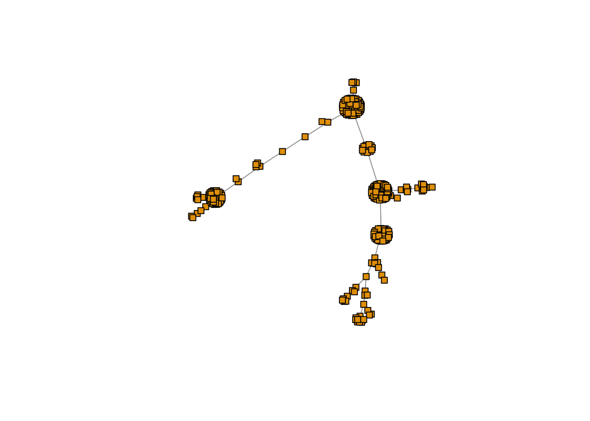

Graphical relationship Indonesian birds
Kushal K Dey
3/25/2018
Intro
Here, we explore a graphical model connecting the different bird species in the Java, Bali, Lombok, Sumbawa areas in Indonesia. We here are interested in seeing how the clustering of bird species into communities by the GoM model matches with an independently generated graphical structure of the bird species.
Packages
library(igraph)
library(RColorBrewer)
library(ape)Data
datalist <- get(load("../data/wallace_region_pres_ab_breeding_no_seabirds.rda"))
latlong <- datalist$loc
data <- datalist$dat
idx1 <- which(latlong[,2] > -9.3 & latlong[,2] < -7.3)
idx2 <- which(latlong[,1] > 112 & latlong[,1] < 119.5)
idx <- intersect(idx1, idx2)
length(idx)## [1] 10latlong2 <- latlong[idx,]
birds_pa_data_2 <- data[idx, ]
birds_pa_data_3 <- birds_pa_data_2[, which(colSums(birds_pa_data_2)!=0)]co_occur_mat <- t(as.matrix(birds_pa_data_3)) %*% as.matrix(birds_pa_data_3)Minimal Spanning Tree (correlation)
cor_dist <- 1 - cov2cor(co_occur_mat)
system.time(mst2 <- ape::mst(cor_dist));## user system elapsed
## 5.403 0.436 5.865mst2.graph <- igraph::graph.adjacency(as.matrix(mst2));
cols1 <- c(RColorBrewer::brewer.pal(12, "Paired")[c(3,4,7,8,11,12,5,6,9,10)],
RColorBrewer::brewer.pal(12, "Set3")[c(1,2,5,8,9)],
RColorBrewer::brewer.pal(9, "Set1")[c(9,7)],
RColorBrewer::brewer.pal(8, "Dark2")[c(3,4,8)])
plot(mst2.graph,
edge.arrow.mode=0,
vertex.size = 5,
vertex.shape="square",
vertex.label=NA,
layout= layout_with_fr
)
Coloring by GoM clusters
topics_clust <- get(load("../output/methClust_java_bali_lombok.rda"))cols1 <- c(RColorBrewer::brewer.pal(12, "Paired")[c(3,4,7,8,11,12,5,6,9,10)],
RColorBrewer::brewer.pal(12, "Set3")[c(1,2,5,8,9)],
RColorBrewer::brewer.pal(9, "Set1")[c(9,7)],
RColorBrewer::brewer.pal(8, "Dark2")[c(3,4,8)])K = 2
freq <- topics_clust[[2]]$freq
max_clus <- apply(freq, 1, function(x) which.max(x))
plot(mst2.graph,
edge.arrow.mode=0,
vertex.size = 5,
vertex.shape="square",
vertex.label=NA,
vertex.color=cols1[as.numeric(max_clus) + 1],
layout= layout_with_kk
)K = 3
freq <- topics_clust[[3]]$freq
max_clus <- apply(freq, 1, function(x) which.max(x))
plot(mst2.graph,
edge.arrow.mode=0,
vertex.size = 5,
vertex.shape="square",
vertex.label=NA,
vertex.color=cols1[as.numeric(max_clus) + 1],
layout= layout_with_kk
)K = 4
freq <- topics_clust[[4]]$freq
max_clus <- apply(freq, 1, function(x) which.max(x))
plot(mst2.graph,
edge.arrow.mode=0,
vertex.size = 5,
vertex.shape="square",
vertex.label=NA,
vertex.color=cols1[as.numeric(max_clus) + 1],
layout= layout_with_kk
)
SessionInfo
sessionInfo()## R version 3.4.4 (2018-03-15)
## Platform: x86_64-apple-darwin15.6.0 (64-bit)
## Running under: macOS Sierra 10.12.6
##
## Matrix products: default
## BLAS: /Library/Frameworks/R.framework/Versions/3.4/Resources/lib/libRblas.0.dylib
## LAPACK: /Library/Frameworks/R.framework/Versions/3.4/Resources/lib/libRlapack.dylib
##
## locale:
## [1] en_US.UTF-8/en_US.UTF-8/en_US.UTF-8/C/en_US.UTF-8/en_US.UTF-8
##
## attached base packages:
## [1] stats graphics grDevices utils datasets methods base
##
## other attached packages:
## [1] ape_5.0 RColorBrewer_1.1-2 igraph_1.1.2
##
## loaded via a namespace (and not attached):
## [1] Rcpp_0.12.16 lattice_0.20-35 digest_0.6.15 rprojroot_1.3-2
## [5] grid_3.4.4 nlme_3.1-131.1 backports_1.1.2 magrittr_1.5
## [9] evaluate_0.10.1 stringi_1.1.6 rmarkdown_1.9 tools_3.4.4
## [13] stringr_1.3.0 parallel_3.4.4 yaml_2.1.18 compiler_3.4.4
## [17] pkgconfig_2.0.1 htmltools_0.3.6 knitr_1.20This R Markdown site was created with workflowr